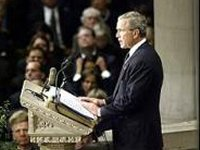

|
|
HOME
MY TRIBUTE GALLERY QUOTES SPEECHES MEMORIAL LINKS |
President George W. Bush Euology, June 10, 2004
 Mrs. Reagan, Patti, Michael, and Ron; members of the Reagan family; distinguished guests, including our Presidents and First Ladies; Reverend Danforth; fellow citizens: We lost Ronald Reagan only days ago, but we have missed him for a long time. We have missed his kindly presence, that reassuring voice, and the happy ending we had wished for him. It has been ten years since he said his own farewell; yet it is still very sad and hard to let him go. Ronald Reagan belongs to the ages now, but we preferred it when he belonged to us. In a life of good fortune, he valued above all the gracious gift of his wife, Nancy. During his career, Ronald Reagan passed through a thousand crowded places; but there was only one person, he said, who could make him lonely by just leaving the room. America honors you, Nancy, for the loyalty and love you gave this man on a wonderful journey, and to that journey's end. Today, our whole nation grieves with you and your family. When the sun sets tonight off the coast of California, and we lay to rest our 40th President, a great American story will close. The second son of Nell and Jack Reagan first knew the world as a place of open plains, quiet streets, gas-lit rooms, and carriages drawn by horse. If you could go back to the Dixon, Illinois of 1922, you'd find a boy of 11 reading adventure stories at the public library, or running with his brother, Neil, along Rock River, and coming home to a little house on Hennepin Avenue. That town was the kind of place you remember where you prayed side by side with your neighbors, and if things were going wrong for them, you prayed for them, and knew they'd pray for you if things went wrong for you. The Reagan family would see its share of hardship, struggle and uncertainty. And out of that circumstance came a young man of steadiness, calm, and a cheerful confidence that life would bring good things. The qualities all of us have seen in Ronald Reagan were first spotted 70 and 80 years ago. As a lifeguard in Lowell Park, he was the protector keeping an eye out for trouble. As a sports announcer on the radio, he was the friendly voice that made you see the game as he did. As an actor, he was the handsome, all-American, good guy, which, in his case, required knowing his lines -- and being himself. Along the way, certain convictions were formed and fixed in the man. Ronald Reagan believed that everything happened for a reason, and that we should strive to know and do the will of God. He believed that the gentleman always does the kindest thing. He believed that people were basically good, and had the right to be free. He believed that bigotry and prejudice were the worst things a person could be guilty of. He believed in the Golden Rule and in the power of prayer. He believed that America was not just a place in the world, but the hope of the world. And he believed in taking a break now and then, because, as he said, there's nothing better for the inside of a man than the outside of a horse. Ronald Reagan spent decades in the film industry and in politics, fields known, on occasion, to change a man. But not this man. From Dixon to Des Moines, to Hollywood to Sacramento, to Washington, D.C., all who met him remembered the same sincere, honest, upright fellow. Ronald Reagan's deepest beliefs never had much to do with fashion or convenience. His convictions were always politely stated, affably argued, and as firm and straight as the columns of this cathedral. There came a point in Ronald Reagan's film career when people started seeing a future beyond the movies. The actor, Robert Cummings, recalled one occasion. "I was sitting around the set with all these people and we were listening to Ronnie, quite absorbed. I said, 'Ron, have you ever considered someday becoming President?' He said, 'President of what?' 'President of the United States,' I said. And he said, 'What's the matter, don't you like my acting either?'" (Laughter.) The clarity and intensity of Ronald Reagan's convictions led to speaking engagements around the country, and a new following he did not seek or expect. He often began his speeches by saying, "I'm going to talk about controversial things." And then he spoke of communist rulers as slavemasters, of a government in Washington that had far overstepped its proper limits, of a time for choosing that was drawing near. In the space of a few years, he took ideas and principles that were mainly found in journals and books, and turned them into a broad, hopeful movement ready to govern. As soon as Ronald Reagan became California's governor, observers saw a star in the West -- tanned, well-tailored, in command, and on his way. In the 1960s, his friend, Bill Buckley, wrote, "Reagan is indisputably a part of America, and he may become a part of American history." Ronald Reagan's moment arrived in 1980. He came out ahead of some very good men, including one from Plains, and one from Houston. What followed was one of the decisive decades of the century, as the convictions that shaped the President began to shape the times. He came to office with great hopes for America, and more than hopes -- like the President he had revered and once saw in person, Franklin Roosevelt, Ronald Reagan matched an optimistic temperament with bold, persistent action. President Reagan was optimistic about the great promise of economic reform, and he acted to restore the reward and spirit of enterprise. He was optimistic that a strong America could advance the peace, and he acted to build the strength that mission required. He was optimistic that liberty would thrive wherever it was planted, and he acted to defend liberty wherever it was threatened. And Ronald Reagan believed in the power of truth in the conduct of world affairs. When he saw evil camped across the horizon, he called that evil by its name. There were no doubters in the prisons and gulags, where dissidents spread the news, tapping to each other in code what the American President had dared to say. There were no doubters in the shipyards and churches and secret labor meetings, where brave men and women began to hear the creaking and rumbling of a collapsing empire. And there were no doubters among those who swung hammers at the hated wall as the first and hardest blow had been struck by President Ronald Reagan. The ideology he opposed throughout his political life insisted that history was moved by impersonal ties and unalterable fates. Ronald Reagan believed instead in the courage and triumph of free men. And we believe it, all the more, because we saw that courage in him. As he showed what a President should be, he also showed us what a man should be. Ronald Reagan carried himself, even in the most powerful office, with a decency and attention to small kindnesses that also defined a good life. He was a courtly, gentle and considerate man, never known to slight or embarrass others. Many people across the country cherish letters he wrote in his own hand -- to family members on important occasions; to old friends dealing with sickness and loss; to strangers with questions about his days in Hollywood. A boy once wrote to him requesting federal assistance to help clean up his bedroom. (Laughter.) The President replied that, "unfortunately, funds are dangerously low." (Laughter.) He continued, "I'm sure your mother was fully justified in proclaiming your room a disaster. Therefore, you are in an excellent position to launch another volunteer program in our nation. Congratulations." (Laughter.) Sure, our 40th President wore his title lightly, and it fit like a white Stetson. In the end, through his belief in our country and his love for our country, he became an enduring symbol of our country. We think of his steady stride, that tilt of a head and snap of a salute, the big-screen smile, and the glint in his Irish eyes when a story came to mind. We think of a man advancing in years with the sweetness and sincerity of a Scout saying the Pledge. We think of that grave expression that sometimes came over his face, the seriousness of a man angered by injustice -- and frightened by nothing. We know, as he always said, that America's best days are ahead of us, but with Ronald Reagan's passing, some very fine days are behind us, and that is worth our tears. Americans saw death approach Ronald Reagan twice, in a moment of violence, and then in the years of departing light. He met both with courage and grace. In these trials, he showed how a man so enchanted by life can be at peace with life's end. And where does that strength come from? Where is that courage learned? It is the faith of a boy who read the Bible with his mom. It is the faith of a man lying in an operating room, who prayed for the one who shot him before he prayed for himself. It is the faith of a man with a fearful illness, who waited on the Lord to call him home. Now, death has done all that death can do. And as Ronald Wilson Reagan goes his way, we are left with the joyful hope he shared. In his last years, he saw through a glass darkly. Now he sees his Savior face to face. And we look to that fine day when we will see him again, all weariness gone, clear of mind, strong and sure, and smiling again, and the sorrow of his parting gone forever. May God bless Ronald Reagan, and the country he loved.


|
|
PRES BUSH EULOGY SR. BUSH EULOGY |
Web Site Copyright © 2004. All Rights Reserved. Web Site by Just-Fix-It Web Services |
MULRONEY EUOLGY THATCHER EULOGY |
 View My Guestbook
View My Guestbook
free hit counter